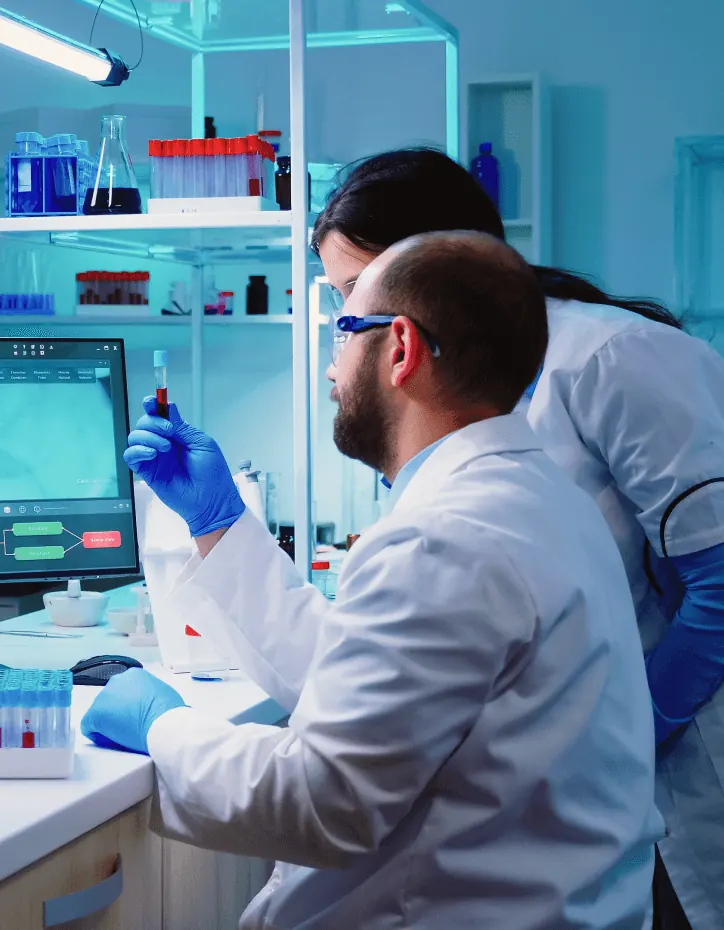
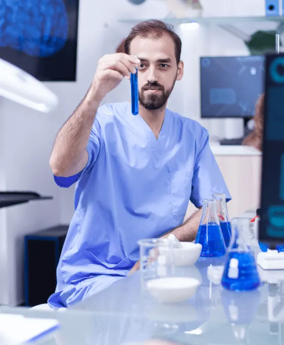
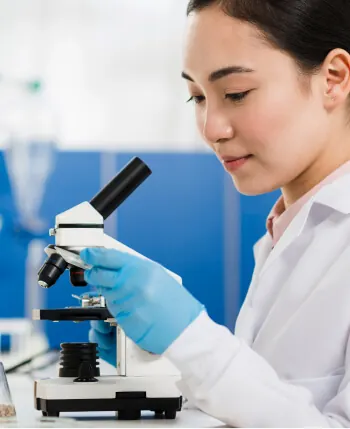
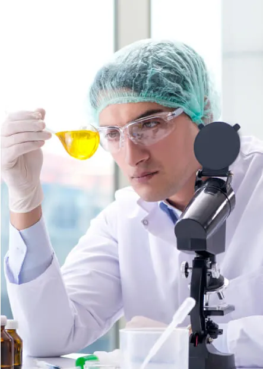
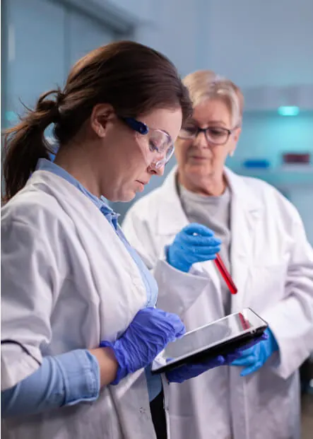
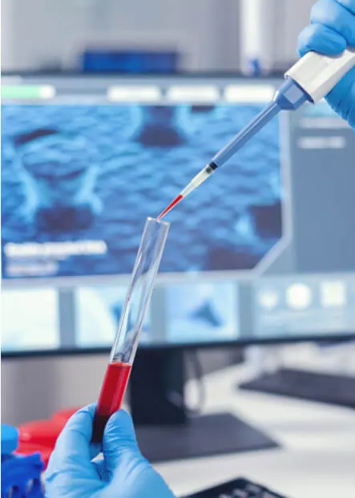
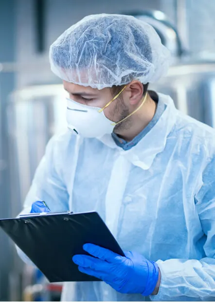

Hématologie
NFS, hémoglobine, plaquettes, vitesse de sédimentation, bilan de coagulation.
Résultat en 24 hLaboratoire ouvert aujourd’hui · 7h30 – 18h
Analyses médicales pour les patients, plateformes de recherche pour les équipes universitaires. Des résultats exacts, validés par nos biologistes, souvent disponibles en 24 h.

Nos analyses
NFS, hémoglobine, plaquettes, vitesse de sédimentation, bilan de coagulation.
Résultat en 24 hGlycémie, HbA1c, bilan lipidique, hépatique et rénal, ionogramme.
Résultat en 24 hECBU, cultures, antibiogrammes, PCR infectieuses.
Résultat en 48 – 72 hBiopsies, cytologie et anatomopathologie, lecture par deux spécialistes.
Résultat en 5 joursThyroïde, vitamine D, sérologies, bilans allergiques.
Résultat en 24 – 48 hSéquençage, caryotype, recherche de mutations, conseil génétique.
Sur prescription spécialiséeAucune analyse ne correspond. Appelez-nous : la liste complète compte plus de 400 examens.
Comment ça marche
Au laboratoire ou au point de collecte le plus proche.
Automates de dernière génération, contrôles qualité quotidiens.
Chaque résultat est validé par un biologiste.
En ligne, par e-mail sécurisé ou transmis à votre médecin.


Recherche universitaire
Nos équipes de recherche travaillent avec les facultés de médecine et de sciences sur des projets financés en propre ou en partenariat. Nos plateformes sont ouvertes aux doctorants et aux équipes extérieures.
Plateformes




Équipe
Infos pratiques
| Lundi – Vendredi | 7h30 – 18h00 |
|---|---|
| Samedi | 8h00 – 12h00 |
| Dimanche | Fermé · urgences par téléphone |